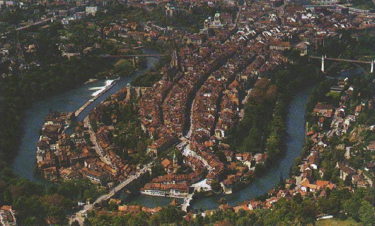

![[Bild nicht verfügbar]](assets/biblogo.png)

Berne (founded 1191) is one of the few mediaeval cities which has been preserved intact and in its entirety.
Because of this, UNESCO has placed Berne on its list of Word Cultural Heritage, among such world-famous sights as the Pyramids of Egypt, the Taj Mahal and the centres of Rome and Florence. It is the only Swiss city which as a whole is honoured in this way.